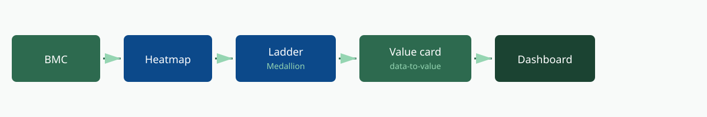
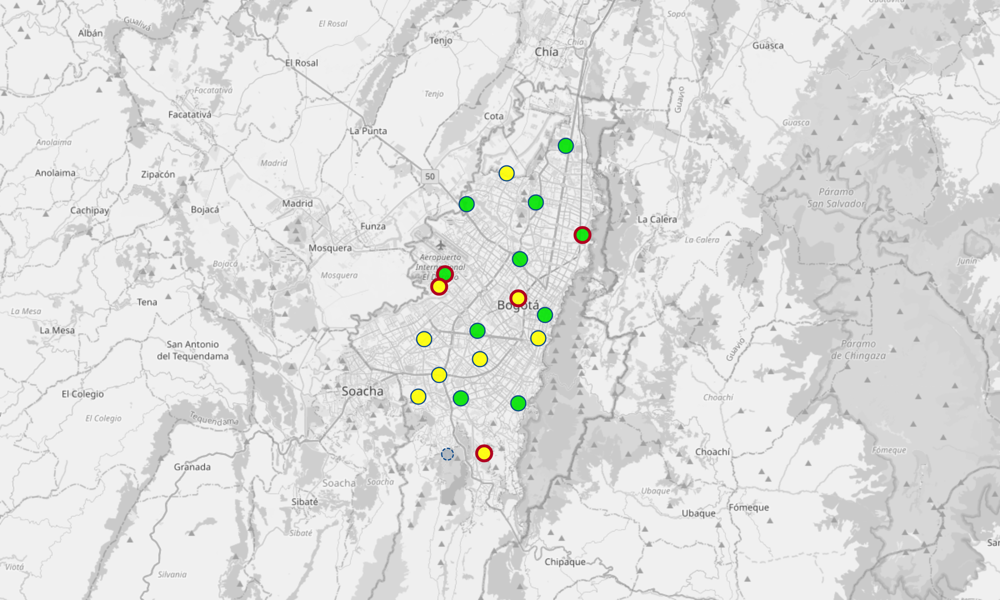
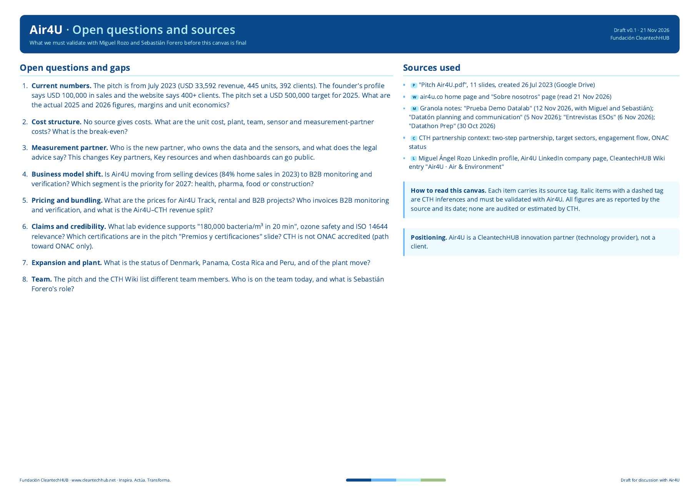

CleantechHUB · Datalab
El piloto del 24 de noviembre guía equipos del Datatón con el método del DatalabThe 24 November pilot guides Datathon teams through the Datalab method
Qué hacemos hoy, cómo se decide y qué sigue después del piloto del 24 de noviembre de 2026What we do today, how decisions are made, and what follows the 24 November 2026 pilot

Principio del métodoMethod principle
Sin datos listos para una decisión real, no hay escalera honesta ni pantalla útil para el usuario que usted nombra.Without data ready for a real decision, there is no honest ladder and no useful screen for the user you name.
Metodología Datatón CTH v0.3 (21 nov 2026)CTH Datathon methodology v0.3 (21 Nov 2026)
MetodologíaMethodology
El CTH Datalab concentra al método, los mentores y la salida hacia 2027CTH Datalab brings together the method, mentors, and the path toward 2027
Equipos del DatatónDatathon teams
Prueban BMC → calor → escalera → tarjeta → tablero, con etiquetas abiertas en la mañana.They test BMC → heatmap → ladder → value card → dashboard, with open morning labels.
MentoresMentors
Cortan a 6 finalistas antes de las 16:00 con reglas de honestidad y avance de escalera.Cut to 6 finalists before 16:00 using honesty rules and ladder progress.
Ruta 20272027 route
3 ganadores entren a la vía Datalab en 2027 (beneficio piloto; detalle con mesa CTH).3 winners enter the Datalab track in 2027 (pilot benefit; details with CTH desk).
CTH Datalab
Sandbox de aire abiertoOpen-air sandbox
Tres paneles — línea base del cliente, delta del innovador, panorama de datos abiertos.Three panels — client baseline, innovator delta, open-data landscape — on every number.
Metodología Datatón CTH v0.3 (21 nov 2026)CTH Datathon methodology v0.3 (21 Nov 2026)
MetodologíaMethodology
El embudo del piloto deja claro quién avanza de 20 equipos a 3 ganadoresThe pilot funnel shows who advances from 20 teams to 3 winners
Hasta 20 equipos en el piloto del 24 nov 2026.Up to 20 teams in the 24 Nov 2026 pilot.
Mentores nombran 6 finalistas con avance del día y bono Plata.Mentors name 6 finalists from the day's ladder progress and Silver bonus.
16:00 — los 6 equipos presentan; jueces puntúan utilidad e honestidad.16:00 — six teams pitch; judges score usefulness and honesty.
3 ganadores hacia la vía CTH Datalab 2027.3 winners toward the CTH Datalab 2027 track.
Paquete de equipo Datatón (ES)Datathon team pack (EN/ES)
MetodologíaMethodology
Confirme las horas del día con el facilitador, excepto la final a las 16:00Confirm times with the facilitator, except finals at 16:00
Bloque 1 mañanaMorning block 1
BMC, Hoja 1 mapa de calor, calificación CTH, compartir etiquetas.BMC, Sheet 1 heatmap, CTH scoring, share labels.
AlmuerzoLunch
Bloque 2 tardeAfternoon block 2
Hoja 2 escalera Medallion, Hoja 3 tarjeta y boceto de tablero, mentores.Sheet 2 Medallion ladder, Sheet 3 value card and dashboard sketch, mentors.
Anuncio de 6 finalistasSix finalists announced
FinalesFinals
Seis equipos — pitch con boceto; jueces con hoja finals-judging-sheet v0.3.Six teams — pitch with sketch; judges use finals judging sheet v0.3.
CierreClose
3 ganadores y siguientes pasos hacia Datalab 2027.3 winners and next steps toward Datalab 2027.
Paquete de equipo Datatón (ES)Datathon team pack (EN/ES)
Siguiente bloqueNext block
Ahora vemos el método paso a paso con un ejemplo real: una clínica en Bogotá.Now we walk through the method step by step with a real example: a clinic in Bogotá.
Ejemplo · piloto Air4UAir4U pilot example
El método recorre nueve bloques del lienzo hasta una pantalla de una hojaThe method crosses nine BMC blocks to a one-screen dashboard


Recorren nueve bloques del BMC, pintan dónde vive cada dato, suben la escalera Medallion, nombran un usuario y una decisión, y cierran con un boceto de tres paneles.Nine BMC blocks, mark where each dataset lives, climb the Medallion ladder, name one user and one decision, and close with a three-panel dashboard sketch.
Copie la secuencia hoy — mañana etiquetas, tarde grada calculada.Copy the sequence today — labels in the morning, ladder in the afternoon.
Metodología Datatón CTH v0.3 (21 nov 2026)CTH Datathon methodology v0.3 (21 Nov 2026)
Ejemplo · piloto Air4UAir4U pilot example
El ejemplo Air4U muestra el lienzo BMC de una clínica en Bogotá en pilotoThe Air4U example shows an illustrative BMC for a clinic in Bogotá

El BMC de Air4U (ilustrativo, sin diligenciar por la empresa) muestra sensores indoor, ventas citadas en pitch y reseñas en marketplace. Nombre Air4U permitido; la clínica piloto queda anónima.The Air4U BMC (illustrative — not filled in by the company) cites indoor sensors, pitch sales data, and marketplace reviews. Air4U may be named; the pilot clinic stays anonymous.
Empiece por VP1 — el mapa de calor solo colorea bloques ligados a propuestas de valor.Start from VP1 — the heatmap only colours blocks linked to value propositions.
Paquete de equipo Datatón (ES)Datathon team pack (EN/ES)
Sandbox de aire · L1Open-air sandbox · L1
La línea base abierta muestra 19 estaciones RMCAB y la escala ICA en BogotáThe open baseline shows 19 RMCAB stations and the ICA scale in Bogotá
Panorama de datos abiertos del Datalab: 19 estaciones RMCAB (SDA) con PM₂.₅, O₃ y PM₁₀ horarios, más referencia SISAIRE en Mochuelo. Colores ICA PM₂.₅ según Res. 2254/2017.Open-data landscape from the Datalab: 19 RMCAB (SDA) stations with hourly PM₂.₅, O₃ and PM₁₀, plus SISAIRE reference at Mochuelo. PM₂.₅ ICA colours per Res. 2254/2017.

ICA PM₂.₅ · Res. 2254/2017PM₂.₅ ICA · Res. 2254/2017
- 0–12BuenaGood
- 13–37AceptableAcceptable
- 38–55Dañina a grupos sensiblesHarmful to sensitive groups
- 56–150DañinaHarmful
- 151–250Muy dañinaVery harmful
- 251–500PeligrosaHazardous
- Anillo rojo = alerta lógica del datoRed ring = data logic flag
- Círculo punteado = solo referencia (Mochuelo SISAIRE)Dashed circle = reference only (Mochuelo SISAIRE)
| EstaciónStation | PM₂.₅ | O₃ | PM₁₀ |
|---|---|---|---|
| Usaquén | 2.2 | sin datono data | 14.6 |
| Carvajal - Sevillana | 19.9 | sin datono data | sin datono data |
| Tunal | 7 | 16.7 | 44 |
| Centro de Alto Rendimiento | 19.1 | 16 | 16.1 |
| Las Ferias | 11 | 18.6 | 21 |
| Guaymaral | 11 | 13.2 | 31 |
| Kennedy | 22.2 | 6.3 | 50.2 |
| Suba | 15 | 11.2 | 53.8 |
| Puente Aranda | 5.7 | 4.6 | 30 |
| MinAmbiente | 14 | 13.1 | 20 |
| EstaciónStation | PM₂.₅ | O₃ | PM₁₀ |
|---|---|---|---|
| San Cristóbal | 9 | 10.9 | 29 |
| Móvil 7ma | 9.1 | sin datono data | 22.1 |
| Bolivia | 7.4 | 11.3 | 29.4 |
| Fontibón | 9.1 | sin datono data | 33.2 |
| Usme | 19.2 | 23 | 36 |
| Jazmín | 15.7 | 4 | 28.1 |
| Ciudad Bolívar | 18.9 | 12.4 | 53.4 |
| Colina | 11.9 | 9.8 | 11.1 |
| Móvil Fontibón | 28 | sin datono data | 51.8 |
| Mochuelo (SISAIRE) | sin datono data | sin datono data | sin datono data |
Valores provisionales, no validados por la SDA.Provisional values, not SDA-validated.
Fuente: SDA RMCAB + IDEAM SISAIRE, snapshot 4 oct 2026 · Datalab CTH living lab · Mapa base © OpenStreetMap contributorsSource: SDA RMCAB + IDEAM SISAIRE, snapshot 4 Oct 2026 · CTH Datalab living lab · Basemap © OpenStreetMap contributors
Sandbox de aire · L2Open-air sandbox · L2
La línea base del cliente compara cada sitio con la estación RMCAB más cercanaThe client baseline compares each site with the nearest RMCAB station
Contexto propietario del sitio piloto: PM₂.₅ indoor y outdoor frente a la red pública, con ranuras de ejemplo ilustrativo (Ramo, Bolívar) y marco Clínica Colombia del taller Air4U.Client proprietary context for the pilot site: indoor and outdoor PM₂.₅ vs the public network, with illustrative example slots (Ramo, Bolívar) and Clínica Colombia framing from the Air4U datathon workshop.
Sitio del clienteClient site
Ubica la clínica o planta piloto sobre la línea base abierta.Places the pilot clinic or plant on the open baseline.
PM₂.₅ indoor y outdoorIndoor and outdoor PM₂.₅
Compara lecturas en el sitio con la referencia horaria.Compares site readings with the hourly reference.
Estación RMCAB cercanaNearest RMCAB station
Ancla la decisión del gestor a la red pública SDA.Anchors the site manager's decision to the public SDA network.
| SitioSite | PM₂.₅ | Indoor / outdoor | vs RMCAB | NotaNote |
|---|---|---|---|---|
| Ramo (cliente)Ramo (client) | 27 µg/m³ (ejemplo ilustrativo)27 µg/m³ (illustrative example) | sin datono data | sin datono data | ejemplo ilustrativoillustrative example |
| Bolívar (cliente)Bolívar (client) | 16 µg/m³ (ejemplo ilustrativo)16 µg/m³ (illustrative example) | sin datono data | sin datono data | ejemplo ilustrativoillustrative example |
| Clínica Colombia (taller Air4U)Clínica Colombia (Air4U datathon) | sin datono data | sin datono data | sin datono data | sintéticosynthetic |
| Cliente por definirClient TBD | sin datono data | sin datono data | sin datono data | sin datono data |
Datalab CTH living lab, snapshot 4 oct 2026CTH Datalab living lab, snapshot 4 Oct 2026
Sandbox de aire · L3Open-air sandbox · L3
Los sensores Air4U añaden resolución por sitio y un delta antes/despuésAir4U sensors add site-level resolution and a before/after delta
Delta del innovador sobre L1 y L2: sensores por sitio, comparación antes/después y compuerta delta/ROI antes de decidir en el tablero.Innovator delta on L1 and L2: per-site sensors, before/after comparison, and delta/ROI gate before you decide on the dashboard.
Resolución por sitioSite-level resolution
Sensores Air4U añaden lectura más cerca del usuario del dato.Air4U sensors add readings closer to the data user.
Antes y despuésBefore and after
Compara intervención con la línea base del cliente (L2).Compares intervention with the client baseline (L2).
Delta y compuerta ROIDelta and ROI gate
Resume el cambio útil antes de decidir en pantalla.Summarises useful change before you decide on screen.
| Sensor | SitioSite | AntesBefore | DespuésAfter | CO₂ | NotaNote |
|---|---|---|---|---|---|
| A4U-R1 | Ramo (ejemplo ilustrativo)Ramo (illustrative example) | sin datono data | sin datono data | pendientepending | ejemplo ilustrativoillustrative example |
| A4U-R2 | Ramo (ejemplo ilustrativo)Ramo (illustrative example) | sin datono data | sin datono data | pendientepending | ejemplo ilustrativoillustrative example |
| A4U-R3 | Ramo (ejemplo ilustrativo)Ramo (illustrative example) | sin datono data | sin datono data | pendientepending | ejemplo ilustrativoillustrative example |
Datalab CTH living lab, snapshot 4 oct 2026CTH Datalab living lab, snapshot 4 Oct 2026
Ejemplo · piloto Air4UAir4U pilot example
El mapa de calor ubica los sensores D1 en propuestas de valor bajo escenario estrictoThe heatmap places D1 sensors on value propositions under strict scoring

Puntaje D1D1 score
D=10, banda WARM; enlaza VP, KA y KR. Etiquetas LEGAL?, TECH?, QUALITY? — avisan, no excluyen.D=10, WARM band; links VP, KA, KR. LEGAL?, TECH?, QUALITY? tags warn — they do not exclude.
Qué copiar hoyCopy today
Fundador y operador marcan conjuntos por bloque; CTH devuelve bloques para la tarde. Debajo de Bronce sigue siendo válido.Founder and operator mark sets per block; CTH returns afternoon blocks. Below Bronze is still valid.
Mañana es entrada abierta — esto no es la escalera todavía.Morning is open intake — this is not the ladder yet.
Paquete de equipo Datatón (ES)Datathon team pack (EN/ES)
Ejemplo · piloto Air4UAir4U pilot example
La escalera Medallion deja el ejemplo debajo de Bronce sin penalizar al equipoThe Medallion ladder leaves the example below Bronze without penalising the team
Tarjeta A (sensores D1)Card A (D1 sensors)
Nivel alcanzado: Ninguno (debajo de C1/Bronce). Siguiente grada: B5 almacenamiento nombrado, B6 derechos escritos, B7 exportación.Level reached: None (below C1/Bronze). Next step: B5 named storage, B6 written rights, B7 export.
LecciónLesson
La grada se calcula con casillas B/S/G, no se declara. Sin ONAC acreditado — CTH en camino hacia ONAC, sin afirmar acreditación.The step is calculated from B/S/G boxes, not declared. No ONAC-accredited lab — CTH is on a path toward ONAC, without claiming accreditation.
Esto no es la escalera: use la tarjeta de arranque solo si ningún bloque VP quedó tibio.This is not the ladder: use the starter card only when no VP block went warm.
Paquete de equipo Datatón (ES)Datathon team pack (EN/ES)
Ejemplo · piloto Air4UAir4U pilot example
La tarjeta dato a valor nombra al gestor del sitio piloto y su decisión semanalThe value card names the pilot site manager and a weekly decision

Usuario: gestor de instalaciones. Decisión: ¿activar ventilación o revisar filtros esta semana si el PM₂.₅ indoor podría superar la referencia? Todos los números en estimado mientras la escalera está en Ninguno.User: facilities manager. Decision: activate ventilation or filter review this week if indoor PM₂.₅ might exceed the reference? All numbers stay estimated while the ladder is at None.
Firme solo en Plata+ en pantalla — si no, marque estimado.Silver+ only for firm numbers on screen — otherwise mark estimated.
Paquete de equipo Datatón (ES)Datathon team pack (EN/ES)
Ejemplo · piloto Air4UAir4U pilot example
La plantilla Hoja 4 pone la decisión, el delta y su rango en una sola pantallaThe Sheet 4 template puts the decision, the delta and its range on one screen
Delta: donde el dato se vuelve valorDelta: where data becomes valueentradas → salida → línea de valorinputs → output → value line
Línea base del clienteClient baseline (entrada)(input)
Delta del innovadorInnovator delta (salida)(output)
Panorama de datos abiertosOpen-data landscape (entrada)(input)
sin tablero público mientras los derechos de datos estén abiertosno public dashboard while data rights remain open
Ejemplo diligenciado: ver Hoja 4b en el paquete de equipo v0.3-es.Filled example: see Sheet 4b in the team pack v0.3-es.
Usuario, decisión, caja delta y un panel de número. Confianza firme solo en Plata+.User, decision, delta box, and one number panel. Firm confidence only at Silver+.
Paquete de equipo Datatón (ES)Datathon team pack (EN/ES)
FinalFinals
Las reglas de honestidad son las que los jueces esperan en la final de las 16:00Honesty rules are what judges expect at the 16:00 finals
Plata+ para firmesSilver+ for firm
Número mostrado como firme exige Plata u Oro en la Hoja 2 ligada a ese dato.A number shown as firm requires Silver or Gold on the linked Sheet 2.
Si no, estimadoElse estimated
Bronce o Ninguno — marque estimado; pantalla útil sin inflar la grada.Bronze or None — mark estimated; still a useful screen without inflating the step.
Sin tablero públicoNo public dashboard
Mientras acceso legal o ético siga abierto en cualquier dato usado en el tablero.While legal or ethical access stays open on any dataset used.
Sin tablero público si los derechos siguen abiertos. La honestidad en estimado puede ganar a pantallas bonitas sin soporte.No public dashboard while data rights stay open. Honest estimated numbers can beat flashy screens with no sheet backup.
Paquete de equipo Datatón (ES)Datathon team pack (EN/ES)
FinalFinals
Los mentores y jueces califican con reglas de utilidad, honestidad y bono PlataMentors and judges score usefulness, honesty, and Silver bonus
- Mentores eligen 6 finalistas con avance de escalera, completitud de Hoja 3 y bono Plata (+1 por número firme en Plata u Oro en la tarjeta, máx. +3).Mentors pick 6 finalists from ladder progress, Sheet 3 completeness, and Silver bonus (+1 per firm Silver+ number on the card, max +3).
- Finales 16:00 — Parte A utilidad 0–5; Parte B honestidad 0–5 (total /10).Finals 16:00 — Part A usefulness 0–5; Part B honesty 0–5 (total /10).
- Empate en utilidad y honestidad — gana la historia solo si ambas partes empataron.Tie on usefulness and honesty — story wins only if both parts tied.
- Un tablero simple y honesto gana a uno llamativo sin respaldo en la hoja.A simple honest dashboard beats a flashy one with no sheet backup.
Paquete de equipo Datatón (ES)Datathon team pack (EN/ES)
MetodologíaMethodology
Cada equipo recibe hoy el paquete v0.3-es y apoyo del facilitadorEach team receives the v0.3 pack and facilitator support today
pilotopilot · IncluidoIncluded
- Paquete equipo v0.3-es (hojas 1–3, hoja 4 plantilla de tablero, agenda, nota de derechos, fuentes abiertas).Team pack v0.3-es (sheets 1–4 template, agenda, data-rights note, open sources).
- Plantilla de carpeta Drive cuando el facilitador la active.Drive folder template when the facilitator enables it.
- Prompts de IA del team pack para acelerar redacción, no para inventar cifras.Team-pack AI prompts to speed drafting, not to invent figures.
Sin costo de entrada en el piloto; beneficio Datalab 2027 para 3 ganadores según mesa CTH.No entry fee in the pilot; Datalab 2027 benefit for 3 winners per CTH desk.
Hojas 1–4Sheets 1–4
Mapa de calor, escalera Medallion, tarjeta y plantilla de tablero v0.3-es.Heatmap, Medallion ladder, value card, and dashboard template v0.3-es.
Carpeta DriveDrive folder
Plantilla cuando el facilitador la active (guía en el paquete).Template when the facilitator enables it (guide in the pack).
Prompts IAAI prompts
Aceleran redacción — no inventan cifras ni gradas.Speed drafting — do not invent figures or ladder steps.
Paquete de equipo Datatón (ES)Datathon team pack (EN/ES)
Derechos de datosData rights
Las reglas prácticas de derechos de datos protegen sitios y personas sin ser asesoría legalPractical data-rights rules protect sites and people — not legal advice
Solo datos permitidosPermitted data only
No personales en archivos compartidos; roles, no nombres; anonimización cuando aplica.No personal data in shared files — roles, not names.
Sitios identificablesIdentifiable sites
Lecturas en clínica o planta son confidenciales hasta aprobación del cliente piloto.Clinic or plant readings stay confidential until the client approves.
Si hay dudaIf unsure
Marque LEGAL? en el mapa y pida mentor; deténgase ante asesoría legal formal.Mark LEGAL? on the map and ask a mentor; stop for formal legal advice.
Mañana: etiquetas, no exclusiones. Tarde: la grada se calcula, no se declara.Morning: labels, not exclusions. Afternoon: the step is calculated, not declared.
Paquete de equipo Datatón (ES)Datathon team pack (EN/ES)
ContactoContact
La mesa del Datatón atiende dudas operativas por el canal genérico de CleantechHUBThe Datathon desk answers operational questions via CleantechHUB's generic channel
Fundación CleantechHUBCleantechHUB Foundation
Mesa Datatón / DatalabDatathon / Datalab desk
info@cleantechhub.net
Inspira. Actúa. Transforma.